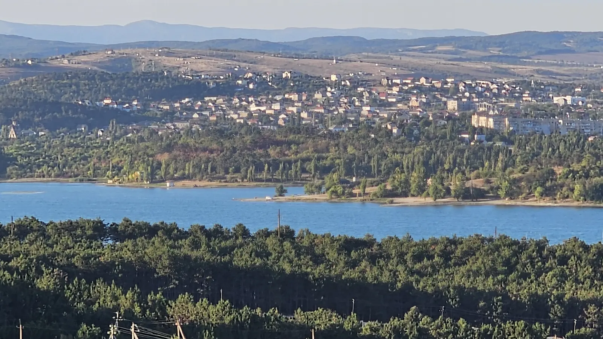
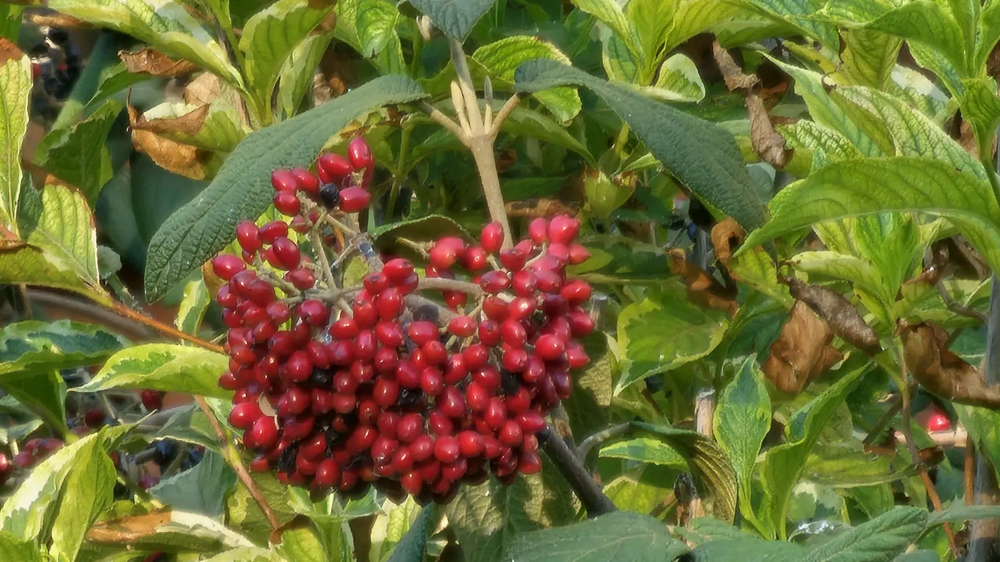

18 августа, без двадцати двенадцать. Я стою на верхушке скалы на Карадаге. Под ногами серый камень в трещинах, слева зубцы хребта, справа обрыв и море до горизонта.
Тени нет. Неба больше, чем всего остального.

Эту поездку я выиграл в конкурсе «Россия — страна возможностей». Групповой тур: Симферополь, обсерватория, Бахчисарай, потом Севастополь, о нём отдельный пост, и под конец Карадаг.
Несколько фактов о регионе
- площадь 26 тысяч км². Живёт здесь 1,9 миллиона человек
- время московское, часы переводить не нужно
- ботанический сад в Симферополе, Салгирку, заложил академик Паллас в 1795 году. В семь утра белки рядом уже завтракают. Проверил сам
- в Крымской астрофизической обсерватории в 1961 году поставили телескоп с зеркалом 2,6 метра. Тогда это был крупнейший телескоп в СССР и Европе
- Пушкин был в Бахчисарае в 1820 году и потом написал «Бахчисарайский фонтан». В чашу фонтана до сих пор кладут цветы. Видел сам
- Карадаг — остатки вулкана, который действовал около 160 миллионов лет назад. Ходить по заповеднику можно только с его сотрудником
- на склонах Карадага растут кактусы, с плодами. Тоже проверил сам, глазами
Привет, Крым
В Симферополь я приехал поездом. Накануне в одиннадцать вечера он шёл через Ростовскую область, а на следующий вечер я уже гулял по городу.


Симферополь до завтрака
Встал до шести и пошёл гулять. Сначала Салгирка: ботанический сад на берегах Салгира.


Потом наверх, на скалистый холм на краю города. Отсюда видно весь Симферополь, водохранилище и горы на горизонте.



На обратном пути в ветках ореха сидела белка и ела орехи.



Телескоп и робот
Дальше на автобусе в посёлок Научный, в Крымскую астрофизическую обсерваторию. Она тут с 1945 года, среди леса в горах.


Дворец в лесах
Бахчисарай, Ханский дворец. Сейчас он на реставрации, закончить её обещают к концу 2027 года.


Тот самый фонтан. В чаше, как и при Пушкине, цветы.


Над старым городом нависают скалы. Под ними кафе и гостиницы.

Выше по ущелью Свято-Успенский пещерный монастырь. Его основание относят к концу VIII века. Церкви и кельи врезаны прямо в обрыв.


Вечером того же дня я был уже в Севастополе. Это отдельный регион и отдельный пост.
Пока, Крым
Последний день — восток полуострова, Карадагский заповедник. Начинается всё с табло у входа.


Наверху гребень: сухая трава, чёрные зубцы скал и море с двух сторон.


На Камчатке, где я был до этого, вулканы дымят. Карадагский потух 160 миллионов лет назад, и по нему водят экскурсии.


Крым за три дня: город на рассвете, телескоп, дворец в лесах и гребень Карадага в жару. Дворец обещают закончить к 2027 году. Есть повод проверить.
- Дней
- 3
- Часов разницы с Москвой
- 0
- Первый кадр 16 августа
- 06:06
- Белок за утро
- 1
- Роботов в обсерватории
- 1
- Высота горы Святой, м
- 576
- Возраст карадагского вулкана, млн лет
- 160
- Год окончания реставрации дворца (план)
- 2027